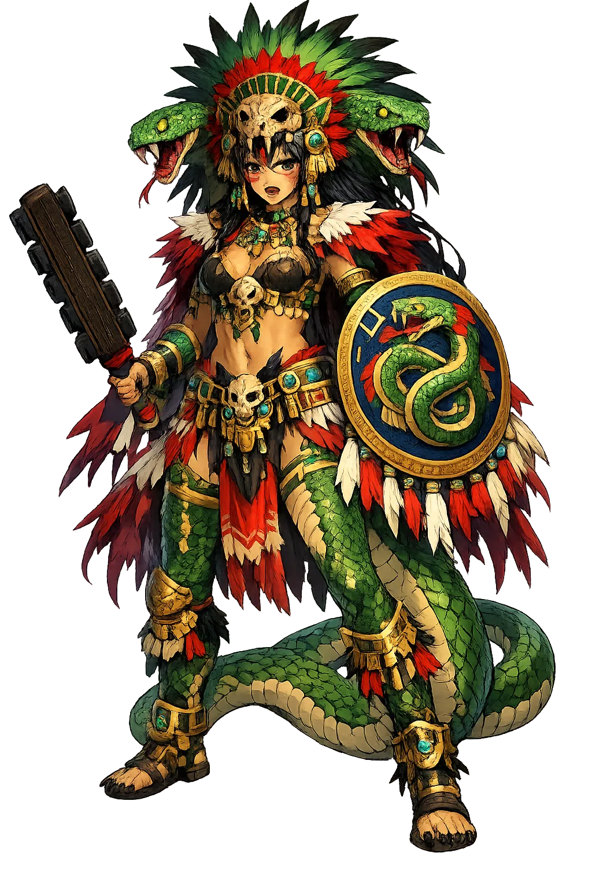

Unicode restoration and ASCII comparison
Cihuacōātl
The name survives only in scholarly transliteration. Cihuacōātl is the standard Nahuatl romanisation, documented in academic sources — “Snake Woman”. Its macron-length vowels preserve distinctions lost in plain ASCII.
No indigenous writing system is securely attested for individual nahuatl names. The form shown is a modern scholarly transliteration.
cihuacoatl
Reduced to plain cihuacoatl, the name loses everything that made it specific: macron-length vowels. What remains is an ASCII string that machines can parse but that no longer speaks with its original voice.
Cihuacōātl
The Unicode restoration recovers what ASCII flattened. Cihuacōātl restores macron-length vowels, returning the name to its original written dignity. The domain encodes to Punycode, but the browser displays the truth.
Cihuacōātl.com → xn--cihuactl-m7a37e.com
The non-ASCII characters in Cihuacōātl are encoded while the ASCII remains visible. To the DNS, it is Punycode. To humanity, it is Cihuacōātl.
How Cihuacōātl is preserved in writing
No indigenous writing system is securely attested for individual nahuatl names. The form shown is a modern scholarly transliteration.
Contribute scholarly provenance →Owned, ideal, and ASCII forms of Cihuacōātl
Cihuacōātl
The live temple domain — cihuacōātl.com.
cihuacoatl
The plain ASCII fallback — what DNS and legacy systems see.
How Cihuacōātl was spoken
Childbirth, Midwifery, and the Fate of Mothers
Cihuacōātl is the divine midwife and the spectral woman who haunts the crossroads. In one aspect she protects women in labor; in another she wanders at night weeping for children who died unbaptized into life. She embodies the dangerous threshold between pregnancy and birth, life and death, the domestic hearth and the wild road.
She aids women in labor and receives the afterbirth; midwives call upon her and make offerings.
The tēntitl 'midwife' served as her human representative; birthing rituals invoked her power.
La Llorona, the wailing specter of crossroads and waterways, descends partly from Cihuacōātl lore.
She governs the dangerous moment when a new life crosses from the spirit world into the body.
Stories of Cihuacōātl
Cihuacōātl's mythology is preserved in the birth rituals recorded by Sahagún and in the widespread Mexican legend of the weeping woman. She is both a beneficent guardian and a terrifying ghost, a duality that reflects the high mortality of childbirth in the pre-modern world.
Sahagún's informants describe how midwives addressed the newborn as a captive taken in battle and invoked Cihuacōātl as the divine protectress of the birthing chamber. The afterbirth was buried as an offering, and the child was ritually presented to the gods. Cihuacōātl's presence ensured that the dangerous passage from womb to world ended in life rather than death. (Florentine Codex VI.)
Women who died in childbirth were believed to become cihuapipiltin, 'noble women,' powerful spirits who wandered at night. They appeared at crossroads, weeping for their lost children, and could seize men or foretell disaster. Over time this figure merged with Spanish colonial lore to produce La Llorona, one of the most enduring figures of Mexican folklore.
The title Cihuacōātl was also borne by a senior Mexica official, sometimes described as a 'vice-ruler' or chief counselor. The title's association with a powerful female deity suggests that the office carried sacred as well as administrative authority, perhaps overseeing internal order and justice while the tlātoāni managed external affairs.
Cihuacōātl lives at the threshold. She is the goddess you call when the door between life and death is swinging open and a child is trying to pass through. For most of human history, that door was wider than it is now; many women and infants did not survive the crossing. Cihuacōātl is the divine witness to that grief.
Enter Extended Lore